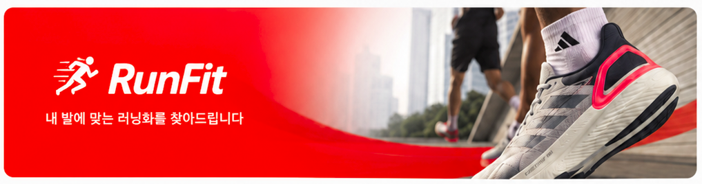

선택하신 정보를 바탕으로 최적의 러닝화를 추천해드릴게요!
01
주로 달리는 거리는?
*
가볍게 조깅
5km 이하
일반 훈련
5~10km
장거리 훈련
10~21km
마라톤
21km 이상
02
러닝 빈도는?
주 1~2회
취미 러너
주 3~4회
꾸준한 훈련
주 5회 이상
매일 수준
03
발볼이 넓은 편인가요?
*
발볼이 넓음
신발이 항상 조임
보통
대부분 잘 맞음
발볼이 좁음
신발이 넓게 느껴짐
04
원하는 쿠션감
딱딱함
물렁함
1
2
3
4
5
선택값
3 (중간)
05
중요하게 생각하는 요소
최대 3개
속도감/경량
부상 방지
편안함
통기성
디자인
06
예산 범위
선택
~7만원
7~12만원
12~20만원
20만원+
상관없음
07
추가로 알려주실 내용
선택
0
/ 200
AI 추천 받기
AI가 최적의 러닝화를 찾고 있어요...